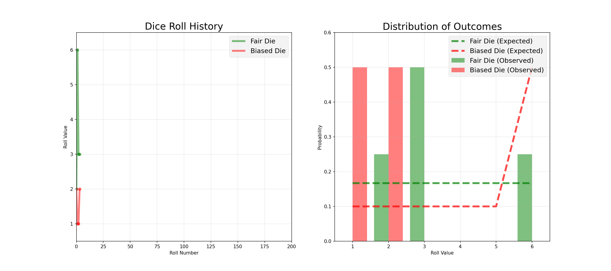
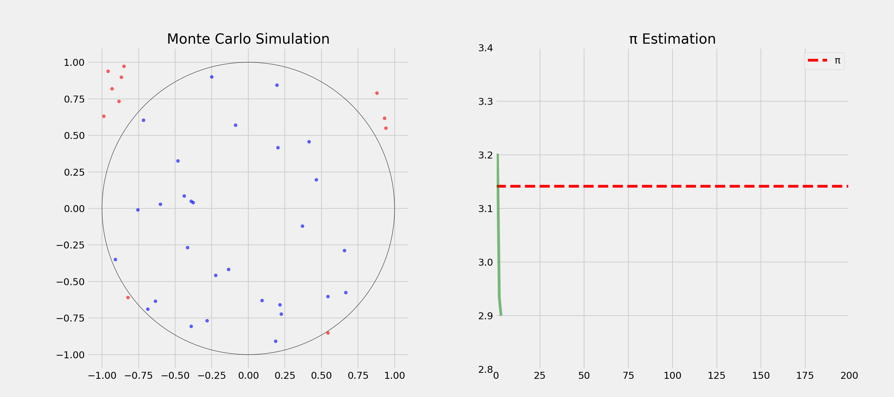
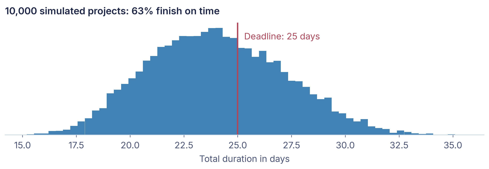
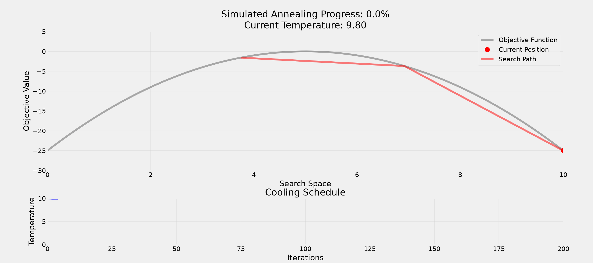
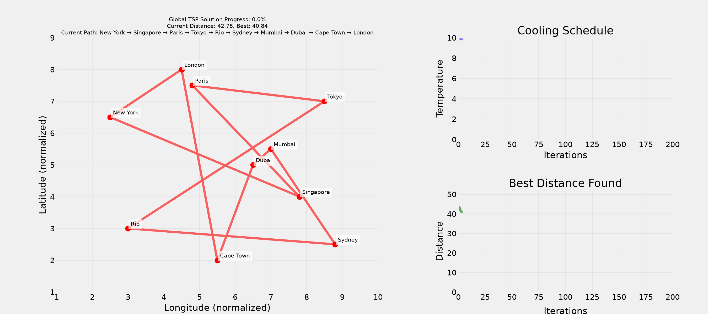

import math
print(math.factorial(52))80658175170943878571660636856403766975289505440883277824000000000000Programming: Everyday Decision-Making Algorithms
When a problem is too big to solve exactly, a bit of randomness often gets you a good answer fast.
Why it matters
Will your project finish on time? Which route through 15 cities is shortest? Questions like these are too complex to calculate exactly. Companies use randomness every day to estimate risks, plan routes and allocate scarce places fairly.
Question: What comes to your mind when you think of randomness?
Notes
Topic: understanding how randomness powers algorithms and decision-making in computer science and everyday life. Why this matters: randomness isn’t just about gambling. It is a powerful tool that makes computers faster, cryptography secure, and helps us solve problems. Today we learn how embracing uncertainty can lead to better solutions.
Old agenda: understanding randomness (from casinos to algorithms), randomness in daily life, computer science applications (Monte Carlo, simulated annealing, cryptography), decision making with randomness.
Question: What’s the opposite of randomness?
Question: How would you test if a pair of dice is fair?

Notes
Randomness is a fundamental aspect of the world, and it is not just about generating random numbers. Testing: generate random inputs to find bugs. Optimization: escape local optima in complex problems. Simulation: model complex systems with uncertainty. Security: make systems unpredictable to attackers. Fairness: eliminate bias in selection processes.
Question: Where do you encounter randomness in daily life?
correct-horse-battery-staple is more secure than Tr0ub4dor&3Notes
The key trade-off of this lecture: perfect vs. “good enough” solutions. Randomness is everywhere around us, and computer scientists use it on purpose.
Question: Difference between true and pseudo-randomness?
True Randomness
Pseudo-randomness
What we covered
Randomness is more than gambling: it makes algorithms faster, systems secure and discoveries possible.
Question: How many possible orders exist for a shuffled deck of cards?
import math
print(math.factorial(52))80658175170943878571660636856403766975289505440883277824000000000000Computing and evaluating all possible combinations is not feasible!
Question: Anybody ever heard of “Monte Carlo methods”?
Notes
Monte Carlo methods were developed in the 1940s for nuclear weapons research. Nuclear fission chain reactions were too complex to calculate exactly, so the researchers simulated them with random numbers to evaluate the probabilities of different outcomes.
Question: How could we estimate π?

Notes
Instead of a single forecast, Monte Carlo gives a range of outcomes with probabilities. The recipe is always the same: describe each uncertain input by a range or distribution, draw random values for all inputs, compute the result, repeat thousands of times, and look at the distribution of results.
Three uncertain tasks, most likely 21 days in total, deadline 25 days:

What we covered
Running many random simulations gives reliable estimates where exact calculation is out of reach.
Question: In which order would you visit 10 cities by plane with minimal total distance?
import math
print(math.factorial(10))3628800Question: What could be a strategy?
Question: What could be the problem with this approach?
Notes
Time complexity grows factorially with the number of cities, and memory requirements increase with the problem size as well. Brute force is not feasible for real-world problems.
Notes
Hill climbing iteratively improves a solution by making small changes. Like climbing in fog, it can only see the immediate surroundings and does not know whether higher peaks exist elsewhere. It can get stuck in local optima and gives no guarantee of finding the global optimum.
Question: How would you escape a local optimum?
Question: Why accept worse solutions sometimes?


What’s more important for a society?
Freedom
Equality
Question: Any problem with this question?
You might randomly be:
Question: If you didn’t know who you’d be born as, what kind of society would you design?
Notes
But that’s not all: we also need to decide how to measure success and failure of a policy.
Question: What could be the problem with these measures?
Question: What is a selection bias?
Definition: The sample you analyze is not representative of the population you want to study.
WWII: engineers wanted to armor returning planes where the bullet holes were. Abraham Wald: armor where there are no holes, those planes never returned.
Notes
The famous example of survivorship bias: engineers studied returning planes to decide where to add armor and initially focused on the areas with the most bullet holes. Abraham Wald pointed out that they should armor the areas without bullet holes, because planes hit there did not survive to return.
Question: How can randomness promote fairness?
Question: Which would you prefer?
Answer depends on your risk aversion!
Question: When should we embrace vs. reduce randomness?
Embrace When:
Reduce When:
Notes
Remember the Monte Carlo methods: approximations work. Many real-world problems benefit from embracing uncertainty rather than fighting it. Consider the opportunity costs: quick approximations enable faster decisions, balance accuracy against computation time, random sampling against complete enumeration. Many problems benefit from fast, good-enough solutions rather than perfect ones.
What we covered
Random steps help a search escape bad solutions, and random choices can make decisions fairer.
Randomness everywhere: why chance is useful
Randomness is more than gambling: it makes algorithms faster, systems secure and discoveries possible.
Simulate instead of calculate: Monte Carlo
Running many random simulations gives reliable estimates where exact calculation is out of reach.
Let chance help you decide: smarter searches, fairer choices
Random steps help a search escape bad solutions, and random choices can make decisions fairer.
Will your project finish on time? Which route through 15 cities is shortest? Questions like these are too complex to calculate exactly. Companies use randomness every day to estimate risks, plan routes and allocate scarce places fairly.
Notes
That’s it for today’s lecture! We’ve covered the basics of randomness and its applications. In the upcoming tutorials, we’ll learn how to use AI assistants to generate code with randomness.
Think Python is free online and a great start. Schrödinger programmiert Python is a playful alternative in German.
For more interesting literature, take a look at the literature list of this course.
The main inspiration for this lecture. We have read it and discussed it in depth, always wanting to translate it into a course.↩︎
Social life: chance brings people together